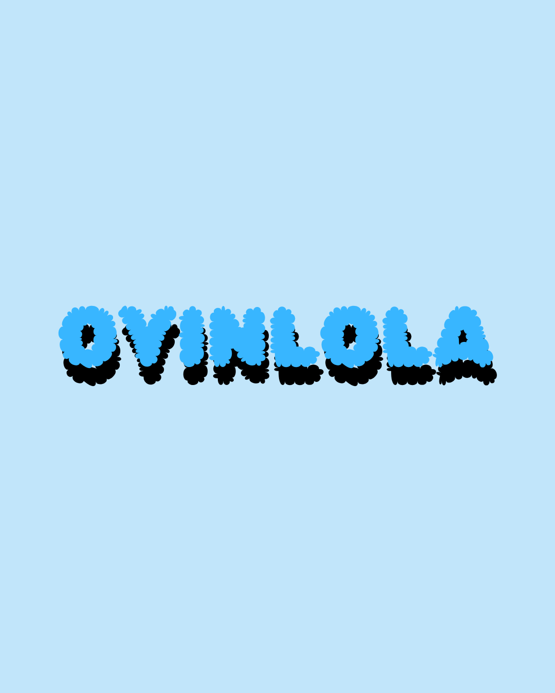
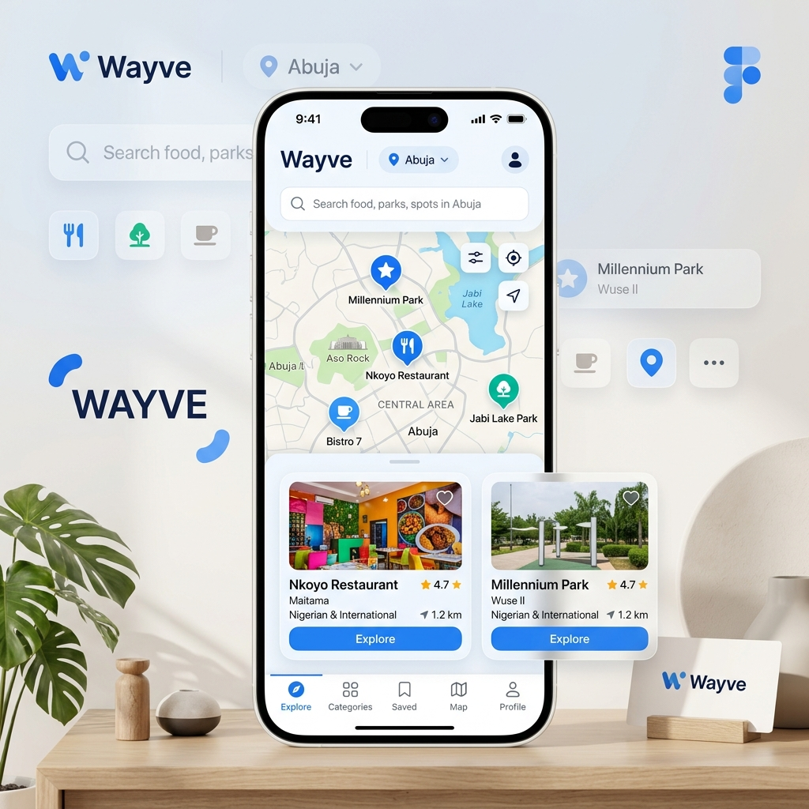
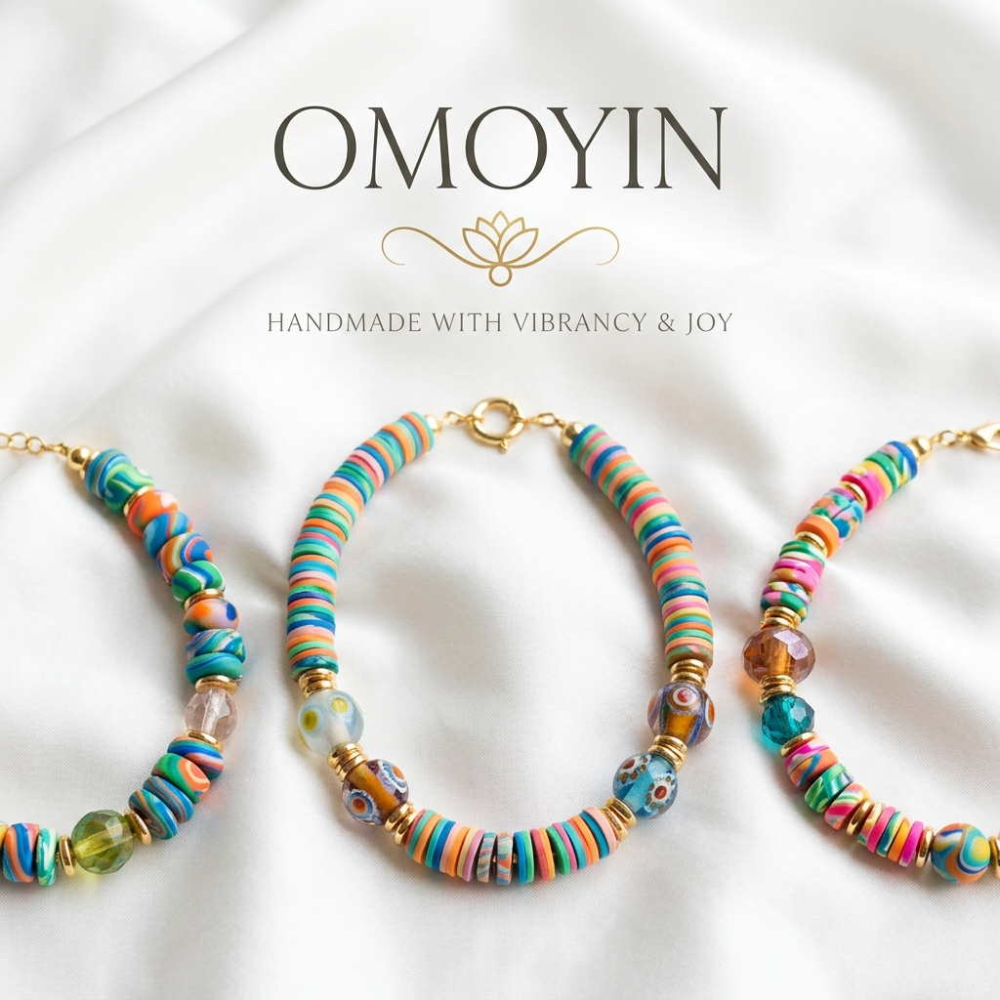

Creative Technologist & Front-end Designer
Hey 👋🏽 I’m Oyinlola Arowolo — a front-end designer and creative technologist passionate about blending design and code to tell meaningful digital stories.
My focus lies in crafting interfaces that feel intuitive, visually engaging, and user-focused. I believe great design isn’t just about aesthetics — it’s about how it makes people feel.
Outside of tech, I run a jewelry brand called Omoyin — where creativity meets color. I also write Becoming Oyin, a weekly reflection on faith, design, and the journey in between.
My methodology for bridging the gap between design and functional code.
Understanding the problem, user goals, and constraints through research.
Structuring ideas into wireframes, flows, and technical requirements.
High-fidelity prototyping in Figma with focus on accessibility and delight.
Turning pixels into performant, responsive code using modern stacks.
Testing, iterating, and polishing until the experience feels seamless.
A tiered look at the layers of my professional toolkit.
I bring ideas to life through design and development. Here’s what I do:
Craft clean, responsive interfaces that align with your brand identity.
Design intuitive user journeys focused on clarity and delight.
Turn static ideas into interactive experiences with HTML, CSS, and JavaScript.
Transform outdated layouts into fresh, user-friendly designs.
Convert Figma mockups into fully functional front-end code.
Blend aesthetics with usability to create experiences that connect and convert.
Designing cohesive visual systems, logos, and brand guidelines for growing ventures.
Drop me an email or DM on Instagram. I typically respond within 48 hours and take on 2–3 projects at a time.
Each project tells a story — here are a few of mine.
Smart Django-based project allocation system with a custom Fairness Engine.
View Case Study →A stealth-adventure prototype built in Unity (C#) featuring Guard AI.
View Project →A robust PHP/MySQL web platform for managing rail travel and reservations.
View Project →A Python-based logic game with a Tkinter GUI and user authentication.
View Project →

Brand guidelines and visual system for a handmade jewelry label.
View Identity →A striking 3D environment built in Blender, featuring complex lighting choreography and crystalline disco effects. Fully animated in the final render.
Watch Animation →Weekly reflections on design, faith, and the creative journey over on Becoming Oyin.
Why "pretty" is a high-bar requirement, but "useful" is the non-negotiable foundation.
Read on Substack →Mapping out the professional future while staying grounded in the present build.
Read on Substack →Breaking down the logic behind the ProjectMatch allocation algorithm.
Read on Substack →Got an idea or collaboration in mind? Let’s build something worth showing off.